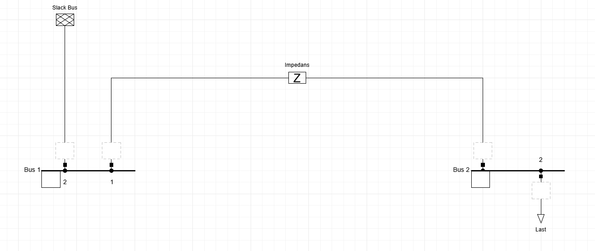

Lab5: Lastflyt i et enkelt kraftsystem#
Læringsmål#
Etter gjennomført lab skal du kunne:
Modellere et kraftsystem ved hjelp av impedanser og Y-bussmatrise.
Utføre lastflytberegninger i et 2-bussystem.
Utvide modellen til et 3-bussystem.
Sammenligne teoretiske beregninger med numeriske resultater.
Analysere spenningsnivåer og effektflyt i nettet.
Del 1: 2-bussystem#
Systembeskrivelse#
Vi betrakter et enkelt distribusjonssystem bestående av:
Buss 1: Slack-buss
Buss 2: Lastbuss (PQ-buss)
Data:
Linjeimpedans:
Last på buss 2:
Baseeffekt:
Systembeskrivelse#
Vi betrakter et enkelt transmisjonssystem bestående av:
Buss 1: Slack-buss
Buss 2: Lastbuss (PQ-buss)
Data:
Linjeimpedans:
Last på buss 2:
Base Bruk
og
Oppgave 1: Y-buss#
Bestem linjeadmittansen i per unit.
og sett opp Y-bussmatrisen
Oppgave 2: Teoretisk beregning#
Utfør fire iterasjoner (opptil \(V_2^{(3)}\)) av Gauss-Seidel-metoden for å estimere spenningen i buss 2.
Bruk startverdien
Oppgave 3: Effektflyt og linjetap#
Etter flere Gauss-Seidel-iterasjoner har spenningen på buss 2 konvergert til
Bestem:
Kompleks effekt fra buss 1 til buss 2,
Kompleks effekt fra buss 2 til buss 1,
Vis alle mellomregninger.
Hint:
Linjetapet bestemmes fra

Oppgave 4: Lastflyt i PowerFactory#
Modeller systemet i DIgSILENT PowerFactory og utfør en lastflytberegning (Power Flow).
Tips til modellering#
Opprett følgende elementer i PowerFactory:
Busbar (ElmTerm) for buss 1 (slack-buss)
Busbar (ElmTerm) for buss 2 (PQ-buss)
External Grid (ElmXnet) koblet til buss 1
Impedance (ElmZpu) mellom buss 1 og buss 2
Load (ElmLod) koblet til buss 2
Gjennomføring#
Opprett de to bussene.
Koble en External Grid til buss 1.
Legg inn lasten på buss 2.
Opprett linjen mellom bussene.
Angi linjens impedans.
Kjør Load Flow.
Registrer følgende resultater fra PowerFactory:
Spenning ved buss 2
Spenningsvinkel ved buss 2
Aktiv effektflyt fra buss 1 til buss 2
Reaktiv effektflyt fra buss 1 til buss 2
Bruk de rapporterte effektflytene til å beregne:
og
for linjen.
Sammenligning#
Sammenlign resultatene med de manuelle Gauss-Seidel-beregningene.
Diskuter eventuelle forskjeller mellom resultatene.
Oppgave 5: Sammenligning#
Sammenlign resultatet fra den manuelle beregningen med resultatet fra programvaren.
Diskuter:
Hvorfor resultatene ikke nødvendigvis er identiske.
Betydningen av flere iterasjoner.
Hvorfor valg av startverdier kan påvirke konvergensen.
Del 2: Utvidelse til 3-bussystem#
Systembeskrivelse#
Systemet utvides med en tredje buss.
Buss 1: Slack-buss
Buss 2: Lastbuss (PQ)
Buss 3: Lastbuss (PQ)
Linjeimpedanser:
Systembeskrivelse#
Systemet utvides med en tredje buss.
Buss 1: Slack-buss
Buss 2: Lastbuss (PQ-buss)
Buss 3: Lastbuss (PQ-buss)
Linjeimpedanser:
Lastdata:
Nominell spenning:
Oppgave 6: Y-buss for 3-bussystemet#
Bestem linjeadmittansene per unit med samme baseverdier som i Del1.
og konstruer Y-bussmatrisen
Oppgave 7: Gauss-Seidel for 3-bussystemet#
a)#
Bruk Gauss-Seidel-metoden og startverdiene
Bestem spenningene ved buss 2 og buss 3.
Utfør to iterasjoner og vis alle mellomregninger.
Bestem:
og
b)#
Anta at busspenningene etter flere iterasjoner konvergerer til
(eventuellt noe justert for avrundinger)
Bestem:
Kompleks effekt levert fra slack-bussen,
Kompleks effekt ved buss 2,
Kompleks effekt ved buss 3,
Oppgave 8: Lastflytberegning#
Utvid Power Factory modellen til 3-buss.
Bestem:
Spenning ved alle busser
Spenningsvinkel ved alle busser
Aktiv effektflyt i alle linjer
Reaktiv effektflyt i alle linjer
Presenter resultatene i en oversiktlig tabell.
Oppgave 9: Refleksjon#
Besvar følgende spørsmål:
Hvilken buss får størst spenningsfall?
Hvilken linje blir mest belastet?
Hvordan påvirker økt last spenningsnivåene i nettet?
Hvorfor er en slack-buss nødvendig i en lastflytberegning?
Hvilke begrensninger har denne modellen sammenlignet med et reelt distribusjonsnett på Vestlandet?
Innlevering#
Lever følgende:
Beregninger og utledninger.
Oppsatt Y-bussmatrise.
Enlinjeskjema.
Resultattabeller fra simuleringene.
Svar på refleksjonsspørsmålene.